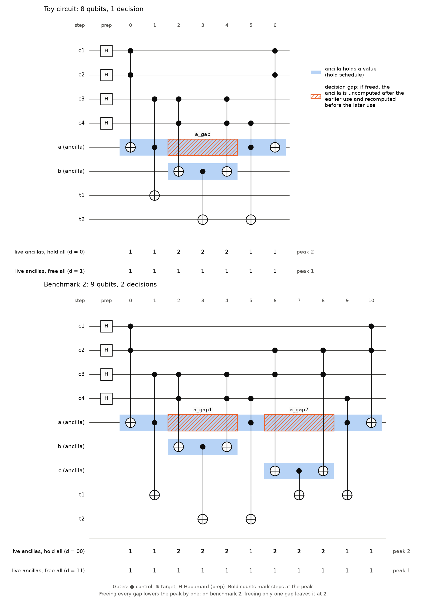
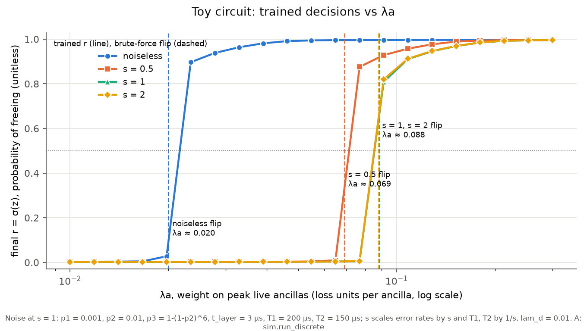
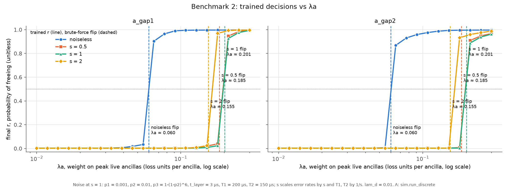
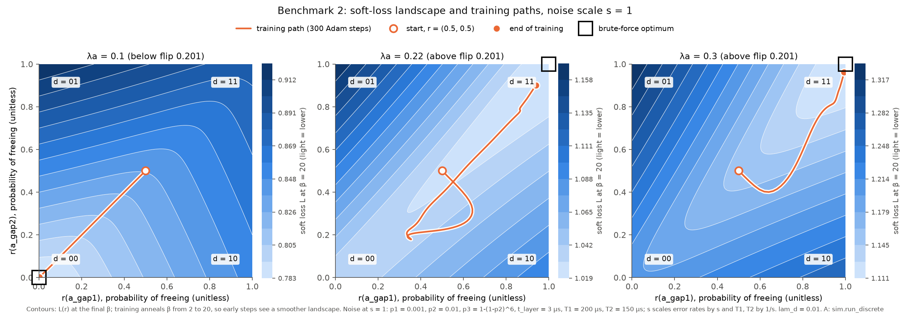

Progress report · CMSC498Z / CMSC838B · Fall 2026
Differentiable Ancilla Reuse
Where the project stands
The full method is built and verified on two small circuits. Gradient descent chose the same schedule as checking every schedule by brute force in {{all_matches}} of the settings we tried, and freeing ancillas saved one qubit on both circuits. What remains is showing the method on circuits too large to check exhaustively, and comparing it with existing tools.
-
1Frame the decisionDone
Every gap between two uses of an ancilla becomes a hold-or-free choice. Two test circuits built, with 8 and 9 qubits.
-
2Simulate exactlyDone
A noisy density-matrix simulator, cross-checked against PennyLane and an independent simulator; 115 passing tests.
-
3Make it differentiableDone
Soft hold-or-free probabilities, a smooth peak-qubit penalty and exact fidelity combine into one loss trained by gradient descent.
-
4Learn and verifyDone
Training matches brute force at {{toy_matches}} toy and {{bench2_matches}} benchmark 2 settings, across 4 noise levels.
-
5Scale upNext
Generated circuits with many decisions and a cheap fidelity estimate, where brute force is no longer possible.
-
6Compare with existing toolsNext
A greedy method and Reqomp, a published uncomputation tool, at the same qubit budgets.
The decision we optimize
An ancilla is a scratch qubit that holds an intermediate value, such as a = c1 AND c2. When that value is used more than once, the gap between two uses offers a choice:
- Hold the ancilla through the gap. This keeps a qubit occupied and exposes it to idle decay.
- Free it: uncompute it right after the earlier use and recompute it right before the later use. The qubit can host another ancilla in between, which lowers the peak number of live ancillas, but the circuit gains two extra Toffoli gates and some depth.
Without noise every schedule computes the same state, so the only tradeoff is qubits against depth. With noise, fidelity becomes a third axis: holding loses fidelity to idle decay, freeing loses it to the extra gates. Figure 1 shows the two circuits we built to study this, with each decision's gap marked.

Method
Each decision i gets a trainable logit zi and a probability of freeing ri = σ(zi). We minimize
- Fidelity. Each discrete schedule d ∈ {0,1}N is simulated once as a noisy density matrix ρd. The soft circuit is the mixture weighted by w(d) = ∏i ridi(1 − ri)1 − di, so F(r) is exact and differentiable in r. An uncompute and its recompute are always inserted together, as one coin flip.
- Peak live ancillas. xt(r) is the expected number of live ancillas at step t: a freed ancilla counts 1 − ri inside its gap. A log-sum-exp SmoothMax turns the peak into a differentiable term, with β annealed from 2 to 20 during training.
- Depth. Δi is the exact extra depth from freeing decision i alone, measured on the circuit after qubit reassignment. λd = {{lam_d}} throughout.
- Training and evaluation. Adam on z for {{steps}} steps from r = 0.5. Each ri is then rounded to 0 or 1, ancillas are reassigned to shared physical qubits by greedy interval colouring, and every reported number is measured exactly on that one circuit.
- Noise. Depolarizing noise after every gate, amplitude and phase damping on every idle qubit in every layer. At noise scale s = 1: {{noise}}. Scale s multiplies the error rates and divides T1 and T2.
Work completed
- Data model for circuits with ancillas and decision gaps, with validity checks, schedule construction and qubit reassignment.
- Density-matrix simulator in JAX with the noise channels above, cross-checked against PennyLane and an independent NumPy simulator (they agree to 4 decimals on every schedule).
- Exact evaluation and baselines: peak ancillas, physical qubits, depth, gate counts and fidelity; no reuse, hold with reassignment, and brute force over every schedule with exact flip points.
- Differentiable optimizer: the loss above, Adam training with β annealing, and a λa sweep compiled once for all λa values and noise scales.
- Experiments: both benchmarks swept over 21 values of λa from 0.01 to 0.3 at four noise scales, plus a loss-landscape study for benchmark 2. 115 tests pass, including gradient checks and hand-computed tables for both circuits.
Results: toy circuit
Table 1 measures each schedule exactly. Freeing saves one qubit and costs two layers and 12 two-qubit-equivalent gates (a Toffoli counts as 6).
{{toy_table}}Table 1. Toy circuit schedules. F is the fidelity to the noiseless target state.

Why the flip points land where they do. Freeing lowers the peak by one ancilla, so the exact objective switches from hold to free once λa exceeds the fidelity lost plus the depth penalty:
Table 2 checks this against brute force for both circuits. It also explains why the toy's flip point barely moves from s = 1 to s = 2: both fidelities fall, so the absolute gap between them stops growing. With a single decision the answer can be read off the table, so the toy validates the pipeline but cannot show what gradients add. Benchmark 2 is the first step past that.
Table 2. Predicted flip points (analytic, from Tables 1 and 3) against the brute-force flip points. On benchmark 2 the comparison is hold-all (00) against free-all (11).
Results: benchmark 2
Benchmark 2 reuses a three times, with a different ancilla needed in each gap. Table 3 shows the coupling: schedules 01 and 10 keep the peak at 2 while paying for extra gates and depth, so the only schedule worth switching to is 11. Freeing gap 2 costs more depth than gap 1 (+4 against +2 layers), because c's compute shares a control qubit with a's recompute.
{{bench2_table}}Table 3. Benchmark 2 schedules (d lists a_gap1 then a_gap2). Brute-force flip points from 00 to 11: {{bench2_flips}} at s = 0, 0.5, 1, 2. The flip point is not monotone in noise, for the same reason as on the toy.


Limitations
- Both circuits have one or two decisions, so brute force solves them instantly. These results validate the pipeline and the relaxation; they do not yet show an advantage for gradients.
- The exact mixture simulates all 2N schedules, which limits it to a handful of decisions on at most 12 qubits.
- Decisions are written by hand for each circuit.
- With 1 − F, fidelity differences shrink as noise grows, which flattens the flip point at high noise.
- All results use one illustrative noise model.
Remaining work
- Nov 17-24Replace 1 − F with −log F so the fidelity penalty grows steadily with noise; add random initial logits over several seeds and a β-schedule ablation.
- Nov 24-Dec 3A parametrized benchmark generator (one value reused k times) for larger instances; a cheap fidelity surrogate, validated against the exact mixture, so the number of decisions can grow; a greedy baseline.
- Dec 3-10Comparison with Reqomp (Paradis et al., 2024) at fixed qubit budgets using our budget mode; tradeoff curves and runtime against the number of decisions.
- Dec 10-17Final website, presentation and demo (December 17).
Expected results
- On small instances, trained schedules continue to match brute force, including on generated circuits with more coupled decisions.
- With −log F, the flip point rises steadily with noise.
- Greedy is competitive while the number of decisions is small; the differentiable approach is most useful once brute force is out of reach, and when it is combined with other differentiable terms.
- Against Reqomp, the noise-aware objective chooses differently from a gate-minimizing one when two schedules use the same number of qubits but differ in noise exposure.